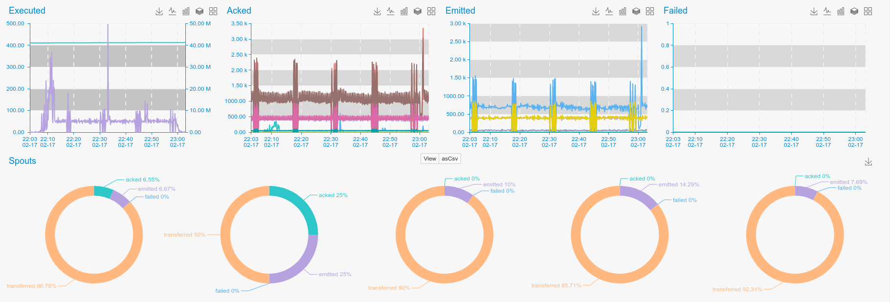

Apache Storm is an Open Source distributed real time processing system.
PuyPuy Have two modules for monitoring Apache Storm
check_storm(Monitors Storm worker processes and exposes Java Lang metrics)check_storm_api(Collect's Topology specific metrics from Storm UI-)
Storm API

Install
cd ${PUYPUY_HOME}/checks_enabled
ln -s ../checks_available/check_ceph.py ./
Configure
Storm API configuration parameters are in bigdata.ini file.
Check supports Topology general aswell as per Spout/Bolt monitoring.
By default per spout/bolt monitoring is turned on, if you do not need thesedetail, please set perspout or perbolt to False.
[Storm-API]
host: 127.0.0.1
port: 8080
perspout: True
perbolt: True
Restart
${PUYPUY_HOME}/puypuy.sh restart
Provides
| Name | Description | Type | Unit |
|---|---|---|---|
| storm_acked | Storm acked requests per second | counter | integer |
| storm_capacity | "Shown runtime capacity | should be around 1.0 " | gauge |
| storm_complete_latency | Latency for completing tasks | gauge | Milliseconds |
| storm_emitted | Emitted messages per second | counter | integer |
| storm_execute_latency | Message execution latency | gauge | Milliseconds |
| storm_executed | Storm executions | counter | integer |
| storm_failed | Failed requests | counter | integer |
| storm_process_latency | Storm process latency | gauge | Milliseconds |
| storm_requested_cpu | Requested CPU resources per topology member | gauge | integer |
| storm_requested_mem_off_heap | Requested heap memory per topology member | gauge | Bytes |
| storm_requested_mem_on_heap | Requested non heap memory per topology member | gauge | Bytes |
| storm_transferred | Storm transfers | counter | integer |
Storm Workers

In order to gather Storm workers statistics, we need to download and enable Jolokia JVM Agent
Jolokia
cd /usr/share/java/
wget -O jolokia-agent.jar http://search.maven.org/remotecontent?filepath=org/jolokia/jolokia-jvm/1.3.6/jolokia-jvm-1.3.6-agent.jar
Configure Storm
As far, as Jolokia JVM Agent is downloaded, we should configure Apache Storm, to use it as JavaAgent for workers and expose metrics via HTTP/Json.
To do this, edit storm.yaml. It should be in STORM_HOME/conf folder and add or append worker.childopts parameters with following:
-javaagent:/usr/share/java/jolokia-jvm-agent.jar=port=4%WORKER-PORT%,host=0.0.0.0
Based on configured supervisor.slots.ports Java agent will bind 4%WORKER-PORT% if you don't like 4, please feel free to change it to any suitable number.
By default, storm children binds on 670 ports, so after making changes in storm.yaml and restarting Storm Topology*, you should see something like this,
when you run netstat -nlptu | grep java
tcp 0 0 0.0.0.0:46700 0.0.0.0:* LISTEN 6357/java
tcp 0 0 0.0.0.0:46701 0.0.0.0:* LISTEN 11281/java
tcp 0 0 0.0.0.0:4670x 0.0.0.0:* LISTEN 11281/java
If you see these ports open, you can configure Agent, otherwise, something is wrong with configuration.
Configure Agent
To configure Agent, change working directory to AGENT_HOME and :
cd checks_enabled
ln -s ../checks_available/check_storm_workers.py ./
Edit conf/bigdata.init and set correct parameters for Storm :
[Storm]
host: node1
port: 46700,46701,4670x
path: /jolokia/read
You can set all ports, used by Jolokia or only those, that are interesting for you, separate them by comma and restart Agent .
cd ../ && ./puypuy.sh restart
Provides
Collected metrics will contain extra tag workerport, which will match ports configured in config file
| Name | Description | Type | Unit |
|---|---|---|---|
| storm_{g1_old/cms}_collectioncount | G1 Old gen or CMS garbage collections count | counter | None |
| storm_{g1_old/cms}_collectiontime | G1 Old gen or CMS garbage collection time | rate | Milliseconds |
| storm_{g1_young/parnew}_collectioncount | G1 Young gen or ParNew garbage collections count | counter | None |
| storm_{g1_young/parnew}_collectiontime | G1 Young gen or ParNew garbage collection time | rate | Milliseconds |
| storm_{g1_young/parnew}_lastgcinfo | G1 Young gen or ParNew garbage collections last GC duration | gauge | MIlliseconds |
| storm_heap_committed | Java Heap memory committed | gauge | Bytes |
| storm_heap_max | Java Heap memory max | gauge | Bytes |
| storm_heap_used | Java Heap memory used | gauge | Bytes |
| storm_nonheap_committed | Java Non Heap memory committed | gauge | Bytes |
| storm_nonheap_max | Java Non Heap memory max | gauge | Bytes |
| storm_nonheap_used | Java Non Heap memory used | gauge | Bytes |